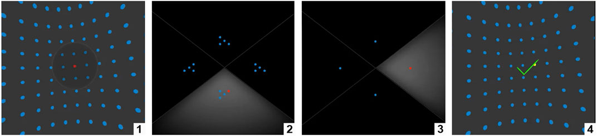
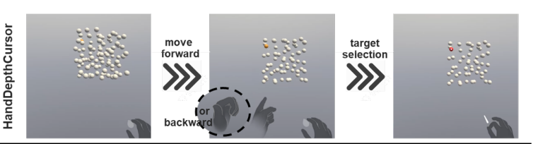
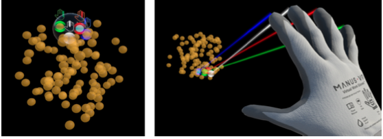

EyeSQUAD
It’s a novel selection technique with eye tracking–Eye-controlled Sphere-casting refined by QUAD-menu. EyeSQUAD is divided into two subtasks: sphere-casting and quad-menu refinement. For the sphere-casting subtask, EyeSQUAD allows the user to control the selection sphere with eyes by calculating the convergence point from the user’s eye ray data. Once the sphere-casting selection has been triggered, the set of objects inside it are evenly and randomly distributed on an out-of-context quad-menu. Users then refine the set of selectable objects by gazing in the direction of the quadrant that contains the target and trigger the selection again. 
- Reach - Infinite It uses the spherer-casting to get a set of objects.
- Cardinality - Multiple: It first select a set of objects then refine to get the target.
- Progressive Refinement - Discrete → Iterative: It select the target by iteratively reducing the number of candidate objects by 4 until find the final one.
HandDepthCursor
HandDepthCursor uses raycasting as the selection mechanism. The use can go deeper and move back to the densely cluttered environment via two non-dominant hand gestures. To go deeper, the user can point her index finger to the front. To
come close, the user can point her thumb to the back.


- Reach - Infinite It uses the raycasting to select an object.
- Cardinality - Single: The depth cursor is used to move the cursor in the densely cluttered environment rahter than selecting a set of objects. It still use raycasting to select one object.
- Progressive Refinement - Continuous: It gradually changes the cursor depth to see the hidden object. Then use raycasting to select it.
MultiFingerBubble
MultiFingerBubble allows users to control a semi-transparent sphere by mapping the hand position onto the sphere position. The sphere can contain multiple targets - up to four. Each target is linked to a specific finger. Users can then select the desired target by flexing the corresponding finger.


- Reach - Infinite It casts a sphere to contain the targets.
- Cardinality - Single: It can only select one object.
- Progressive Refinement - Discrete → Single Step: MultiFingerBubble includes mutliple targets in the volume selection. Each target in the volume selection is associated with a specific finger. Users can select a target by flexing its corresponding finger.